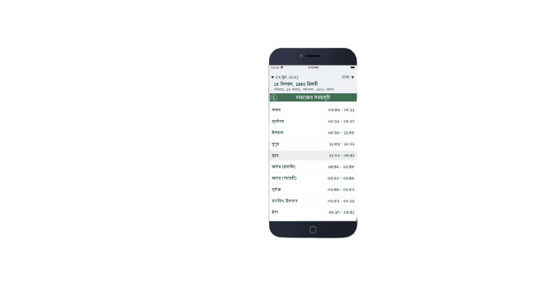

Salat Watch Bangladesh

An app build for muslim people of Bangladesh to find their Salat time conveniently!
This is a super app for muslim people of bangladesh! Anyone in Bangladesh interested in Salat will be able to see the time of Salat.
Features
- See the time of prayer
- Know the time of other prayers besides the Faraj salat
- Identify which prayer will be next
- Track missed prayers
- Access state and district wise prayer schedules
You can find more information about Salat Watch Bangladesh on (github)